Running Sedona¶
Before running [sedona] it is helpful to set the environment variable SEDONA_HOME to point to the base directory of sedona. In the bash shell, for example, add this line to your .bash_profile or .bashrc:
export SEDONA_HOME=/Users/kasen/sedona6/
replacing /Users/kasen/sedona6/ with the base directory of your sedona
To run [sedona] on a single processor, copy the compiled sedona6.ex executable into the directory where you plan to run. Make sure the required input files exist (see … ) and run the code with the command:
./sedona6.ex my_parameter_file.lua
where my_parameter_file.lua is the name of the input parameter file containing runtime parameters. If you run ./sedona6.ex with no subsequent argument, the code will assume the parameter file is name param.lua
For calculations on multiple processing cores, [sedona] uses a mixture of MPI and openMP parallelism. You should refer to the instructions on the system you are using to determine the appropriate commands to execute a parallel calculation. If using mpich, for example, the command to run with MPI parallelism is:
mpirun -n 2 ./sedona6.ex my_parameter_file.lua
where the number after -n is the number of mpi ranks to use (in this case 2).
To run using openMP threading, often you set the number of threads as an environment variable. In the bash shell, for example:
export OMP_NUM_THREADS=4
where the value of OMP_NUM_THREADS is the number of threads to use (in this case 4).
A key distinction between the two parallelism models is that openMP threads share the same memory whereas MPI ranks do not. Thus, each MPI rank used in [sedona] allocates a replica of the entire simulation grid and independently transports a subset of the Monte Carlo photon particles, with the results being communicated among all processors at the end of each transport step. In contrast, all openMP threads (on a given MPI rank) share and operate on the same simulation grid.
The examples/ directory if the [sedona] installation provides example setups for a range of different science problems. This is a good place to start becoming familiar with calculations; below we describe a few instructive examples. If you are acustomed to runnning Jupyter notebooks, the directory examples/jupyter_notebooks provides some example notebooks.
Example #1: Spherical Lightbulb Test¶
Example problem located in directory:
$SEDONA_HOME/examples/spherical_lightbulb/1D
The spherical lightbulb is a quick test problem consisting of a spherical surface (the “core”) that uniformly emits blackbody radiation into an optically thin medium. The radial dependence of the radiation field in steady state can be calculated analytically
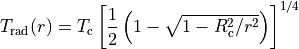
where 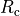 is the radius and 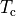 the blackbody temperature of the emitting spherical core. The observed spectrum should be a blackbody of temperature .
To run the problem, change to the examples/spherical_lightbulb/1D directory and copy the executable sedona6.ex there. You will see a parameter file called param.lua which is used to set the runtime parameters. The comments in this file explain the meaning of the parameters being used in the run (see parameter_file for a full description of these files).
Run the code as described in the section above. The calculation should only take a few seconds. The code outputs two spectrum files (spectrum_1.dat and spectrum_1.h5) which both contain the same observed spectrum, just in different formats (ascii and hdf5 respectively). See section ?? for a more complete description of output spectrum files.
The code also outputs plot files (such as plt_00001.dat and plt_00001.h5) which contain information on the properties on the model grid. The files labeled plt_00000 represent the initial conditions of the model, while those labeled plt_00001 represent the state of the model after the first iteration (i.e., after the transport has run). The ascii format only contains a few of the basic radial variables, such as density, temperature, velocity. The hdf5 format also stores the detailed radiation properties in each zone (e.g., the frequency dependent spectrum and opacity, found within the zonedata/ group). See section ?? for a more complete description of the plot files.
The file integrated_quantities.dat provides some of the model properties integrated over the entire grid, for the initial conditions and the state after each iteration.
Once you have successful run the code, you can try changing runtime parameters, such as the properties of the core, the number of photon packets emitted, or the opacity. The model density is set so that using a grey opacity = 1 gives an radial optical depth of 1.
Example #2: Type Ia Supernova Spectrum¶
Example problem located in directory:
$SEDONA_HOME/examples/supernova/TypeIa/spectrum
This example problem calculates a snapshot spectrum of a simple 1D Type Ia
supernova. The input model file is located at
examples/supernova/TypeIa/models/toy_SNIa_1D.mod and was generated by the make_toy_SNIa_model.py script in the same directory. The model consists of
supernova ejecta moving in homologous expansion (i.e., velocity proportional to radius)
with a power-law density profile. The mass of the ejecta is 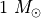 and
the kinetic energy is 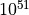 ergs. The compositional structure is composed of
3 layers: the inner 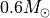 of ejecta is pure radioactive 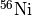 the surrounding 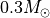 is a mixture of intermediate mass elements (Si, S, Ca)
and the outer 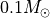 is a 50-50 mixture of carbon and oxygen. The radioactive
will be the energy source of radiation to be observed in the final spectrum.
The directory has several different parameter files, each of which demonstrates a slightly different way of calculating the spectrum. Consider first the parameter file param_d20_lte_exp.lua. In this setup, the time after explosion at which we will calculate the spectrum is set to 20 days (which is set in units of seconds)
-- time of spectrum calculation
tstep_time_start = 20*3600.0*24.0
The parameter file instructs the code to run a steady state calculation at this time with 4 interations:
transport_steady_iterate = 4
In a steady state calculation, the Monte Carlo photon packets are transported through a medium held stationary. This should be a reaonable approximation when the timescale for photons to diffuse through the ejecta is much faster than the time it takes for the ejecta to expand significantly in size. The velocity of the expanding medium is still considered to account for Doppler shift effects.
This steady state calculation requires multiple iterations in order to calculate the radial temperature structure, 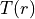, of the ejecta. The temperature is here calculated under the assumption of radiative equilibrium, which means that in each zone the heating by absorption of photons is balanced by the cooling by the emission of photons. Radiative equilibrium is set by:
transport_radiative_equilibrium = 1
On the first iteration, the code uses the given in the model file, which is merely a guess at the true temperature structure. The code calculates the opacities and emissivities using this , and then transports photons packets through the domain, which determines the rate of radiative heating in each zone. After the transport step, the code solves for the temperature in each zone that required for radiative cooling to balance the heating rate. The new solved for will differ from the initial guess, so this procedure must be iterated until convergence (i.e., until the temperature structure stops changing from one iteration to the next). For this problem, around 4 iterations are found to be adequate.
The number of particles propagated in each iteration is set by
-- radioactive particle emission
particles_n_emit_radioactive = 1e4
particles_last_iter_pump = 10
The first parameter instructs the code to emit 10,000 photon packets from a radioacitve sources, in this case the present in the model ejecta. The packets will be emitted randomly throughout the zones that contain . The packets are originally created as gamma-rays produced from the radioactive decay, but in the process of the transport will be absorbed and re-emitted as optical photons.
While 10,000 photons are sufficient to calculate the temperature structure in this 1D model, more photons are desirable to get decent signal to noise in the output spectrum. The parameter particles_last_iter_pump = 10 instructs the code to increase (pump-up) the number
of packets by a factor of 10 (i.e., to 100,000) on the last iteration, when the temperature structure is presumed to be converged.
Other parameters in the parameter file define the opacity to be used in the calculation
-- opacity information
opacity_grey_opacity = 0
opacity_electron_scattering = 1
opacity_fuzz_expansion = 0
opacity_line_expansion = 1
opacity_bound_bound = 0
opacity_epsilon = 1
This parameter file instructs the code to use electron scatter and line opacity in the expansion opacity formalism. The line opacity is chosen to be purely absorptive by setting opacity_epsilon = 1.0, where epsilon is the ratio of absorptive opacity to total (i.e., absorptive plus scattering) opacity.
Run the code using:
./sedona6.ex param_d20_lte_exp.lua
The code produces multiple “plt_00000x.dat” files, one for each iteration. These carry information about the physical properties on the grid after each iteration. You can examine them to ensure that the solution is converged (i.e., the temperature structure is no longer changing from one iteration to the next). The “plt_00000x.h5” carry even more information, in hdf5 format.
The code also produces multiple spectrum files; the one from the last iteration (“spectrum_4.dat”) is the final result you are looking for (the output spectra from early iterations can be examined to double check that the solution is converged). The “spectrum_x.h5” files contain the same information but in hdf5 format.
The “spectrum_x.dat” files each have a one line header that describe the dimensions of the spectral output, with the format:
# n_times n_frequency n_mu n_phi
where n_times is the number of time steps (here 1 for a steady state calculation), n_frequency is the number of frequency points in the spectrum, n_mu is the number of viewing angle bins in the theta direction (where 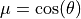) and n_phi the number of viewing angle bins in the phi direction (both set to 1 here since the problem is spherically symmetric).
After the header, the spectrum files have 3 columns in the format:
frequency(Hz) L_nu(ergs/s/Hz) packet_count
The L_nu column gives the specific luminosity of the observed spectrum at that
frequency. To transform this to a flux observed on earth (units: ergs/s/cm^2/Hz),
simply divide L_nu by 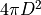 where  is the distance from the supernova
to earth.
is the distance from the supernova
to earth.
The other parameter files in the directory demonstrate slightly different ways in which you can calculate the spectrum of this model:
- param_d20_lte_fuzz.lua: This calculates the spectrum using line data from an alternative file, specified in the
data_fuzzline_fileparameter. The lines are treated in the expansion opacity formalism, so the results should be similar to the first example given, with differences being only due to the atomic data used. - param_d20_lte_bb.lua: This calculates the spectrum using a more accurate treatment of lines (i.e., bound-bound transitions) by considering them independently instead of binning them together in the expansion opacity formalism. A higher freqeuency resolution is required to resolve the line profiles, and the calculation takes longer due to the higher opacities in the resolved line centers.
- param_d20_lte_core.lua: This calculates the spectrum using an absorbing spherical inner boundary surface (i.e., the photosphere, or core) at a radius set by the
core_radiusparameter. Photon packets are emitted as a blackbody from the surface of this core (rather than from the radioactive zones throughout the domain). This calculation is faster than the others since the optically thick inner regions of ejecta below the core are not included in the transport. Using a core is artifical, but the approximation can give reasonable results when the core is placed at high enough optically.
Example #3: Type Ia Supernova Light Curve¶
Example problem located in directory:
$SEDONA_HOME/examples/supernova/TypeIa/lightcurve
This problem uses the same Type Ia supernova model discussed in Example #2, but instead does a time-dependent calculation that evolves the ejecta from 2 days to 60 days after explosion. The final spectral output will be in the “spectrum_final.dat” file (as well as the “spectrum_final.h5” final) which now consists if a series of spectra, one for each time point. The “spectrum_final.dat” file now has four columns with data for:
time(seconds) frequency(Hz) L_nu(ergs/s/Hz) packet_count
The light curve in any band can be calculated by integrating the spectra over the appropriate filter transmission function. Scripts for doing this are available in the sedonalib python package.